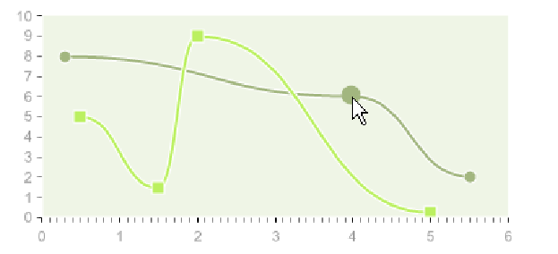

[next] [prev] [prev-tail] [tail] [up]
This effect magnifies the chart element under mouse.
It has a « scale » parameter which specifies the magnifying ratio.
Example for scale=2 :

[next] [prev] [prev-tail] [front] [up]